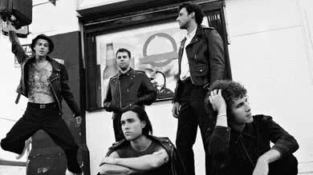

The Neighbourhood é uma banda formada por Jesse Rutherford (vocal), Jeremy Freedman (guitarra), Zach Abels (guitarra), Mikey Margott (baixo) e Brandon Fried (bateria). Crescendo juntos na área de Newbury Park em Thousand Oaks, Califórnia, o The Neighbourhood começou em 2011 como um grupo de amigos. Seu álbum de estreia de 2013, “I Love You”, e o single “Sweater Weather”, de platina dupla, levaram a banda para o topo das paradas pop e alternativas. “Sweater Weather” emergiu como um dos maiores singles de 2013 e The Neighbourhood passou a esgotar os locais em todos shows nos EUA, Europa e Rússia.
“Wiped Out !”, o segundo álbum do The Neighbourhood, foi uma coleção agitada de rock com infusão de R&B, mais uma vez re-escrevendo as regras do que significa ser uma banda de rock na paisagem musical moderna. Ao longo dos anos, The Neighbourhood provaram ser criadores de tendências por meio de sua produção musical e cultural, levando The 1975, Travis Scott e Kevin Abstract em suas primeiras turnês nacionais.

The Neighbourhood
2018
•Wiped Out!
2015
•I Love You
2013
•Chip Chrome & The Mono-Tones
2020
•#000000 & #FFFFFF
2014
•I Love You. (10th Anniversary Edition)
2013
•I Love You. (Chopped Not Slopped)
2013
•Ever Changing
2018, EP
•To Imagine EP
2018, EP
•Thank You
2012, EP